深挖 css 垂直居中的实现
请说说如何实现垂直居中？
前端面试，垂直居中总是一个绕不开的问题，在座的各位可能可以说出不下10种解决方案，最常见的 flex、margin、绝对定位，「复古」一点的用 padding、vertical-align，甚至伪类 after、before 来实现，但是，垂直居中真的那么简单嘛？
无特殊说明，本文示例都在小程序运行环境中
我们来看个需求：
最终要实现的效果如上图，左侧文本右侧图片，简简单单，朴实无华，拿到视觉稿的第五分钟，代码已经写完。
/* index.axml */
<view class="rate">
<text class="font-alipay-number">4.5</text>
<image src="https://gw.alicdn.com/tfs/TB1Ujh9LEz1gK0jSZLeXXb9kVXa-226-42.png" />
</view>
/* index.acss */
@font-face {
font-family: "CommonNumber";
src: url("https://gw.alipayobjects.com/as/g/antui/antui-static/1.0.3/fonts/AlipayNumber-Regular.ttf") format('truetype');
}
.font-alipay-number {
font-family: "CommonNumber" !important;
font-style: normal;
-webkit-font-smoothing: antialiased;
-moz-osx-font-smoothing: grayscale;
}
.rate {
display: flex;
align-items: center;
margin-bottom: 10rpx;
}
.rate text {
color: #FF5900;
font-size: 38rpx;
}
.rate image {
display: block;
width: 113rpx;
height: 21rpx;
}
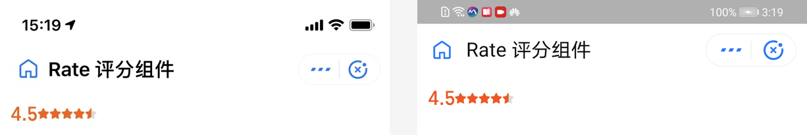
flex 布局，垂直居中，一顿操作，安卓、iOS预览一番，效果完美，今天工资到手，美滋滋。
但是现实往往不会如此简单，当视觉要求突出文本 or 突出星星，需要改变字体大小时，你会得到如下的结果：
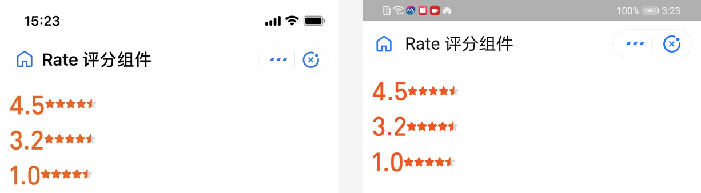
排除视觉偏差因素，可以看到，文本与图片在垂直方向上并未对齐，这是为什么呢？ align-items: center; 之后，子元素在父容器整个容器框内应该居中才对，带着这个疑问，继续往下看。
用自带的 debug 工具查看各个元素后，可以发现，文本本身在整个父容器中未垂直居中，为了更清晰的看到效果，加上背景色，效果如下图：
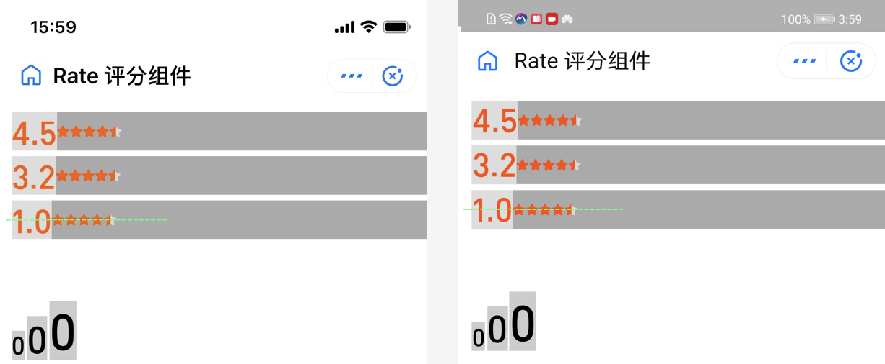
可以看到，文本的字框和图片在整个容器都已经垂直居中，但是文本主体并未垂直居中，如图所示，绿线为容器中心线，字符偏绿线下方，星星完全居中，这就导致了在视觉上，整个视图并未垂直居中，这是什么原因？又如何解决呢？
在这之前，先简单学习一下字体排版中的相关术语：

与中文「方块字」不同，西文字体为了提升可读性与排版的需要，将字体分为不同的部分，如上图：
以小写字母「x」为基准得到 BaseLine、MeanLine
BaseLine 与 MeanLine 之间的高度为 x-height
MeanLine 到字框上部称为升部（ascener）
BaseLine 到字框下部称为降部（decender）
从这几个概念可以得到，文本其实并非占满整个字框，上下往往有间距存在（升部、降部），所以如果升部、降部所占空间不一致，字体越大时，视觉上不居中的情况越严重。
如何解决？呼之欲出：
方案一：改字体，让整个字体的升部、降部为0，充满整个字框
方案二：改图片，让图片根据 x-height 的高度为基准上下偏移，实现「视觉」上的垂直居中
方案一需要用到字体排版软件，这里我们使用 Mac 上的 Glyphs，首先用 Glyphs 打开 Alipay Number 字体：
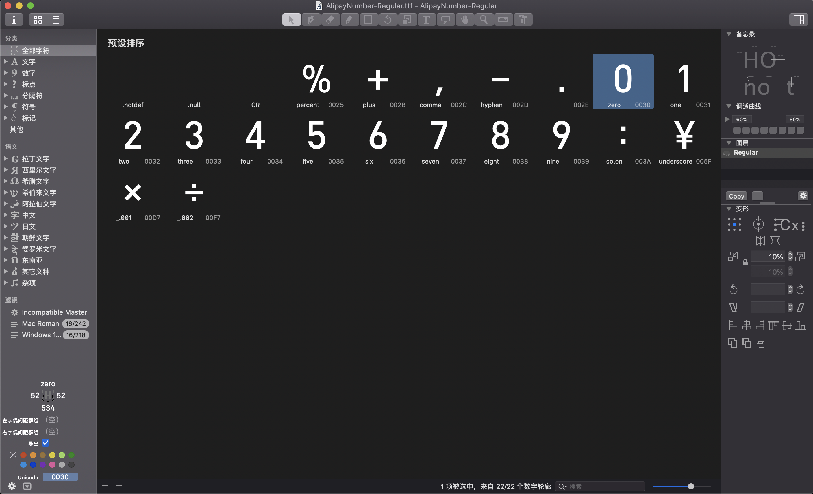
可以看到， Alipay Number 除了包含 0-9 的阿拉伯数字外，还包含常用运算符号以及人民币符号（注意看，羊角符号的字形是 underscore，也就是说使用 Alipay Number 时，需要用 _ 代替 ￥ 才能使用正确的 font-family）。
双击打开字符，可以查看字符的详细信息：
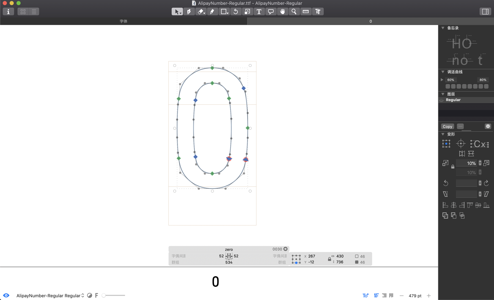
这张图可以清晰的看到字符「0」在字框中的布局，整体在基线以上，调整升部、降部，可以得到充满整个字框的文本：
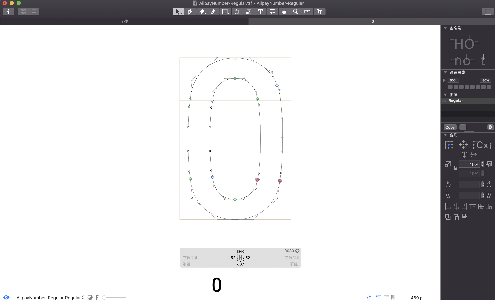
以此类推，改完全部字符后，在代码中引用后查看效果：
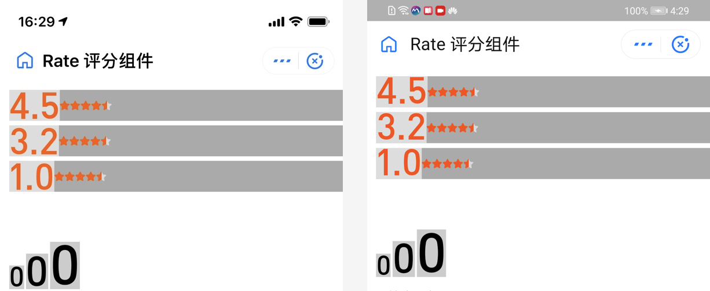
可以看到，虽然已经将升部、降部改为0，让文本充满整个字框，但是文本上下依旧有空隙，文本和图片依旧无法「完美」的垂直居中，什么原因呢？
答案是 line-height ，因为 line-height 默认值为 normal ，而 normal 对应的具体数值在不同系统、不同字体的值是不一致的，并且即使字体的升降部为0， normal 的取值依旧不为 1 。
关于 normal 的值具体是多少，w3c 规范中的原话是：
normal
Tells user agents to set the used value to a “reasonable” value based on the font of the element.
The value has the same meaning as . We recommend a used value for ‘normal’ between 1.0 to 1.2.
The computed value is ‘normal’.
建议值在 1.0 到 1.2 之间，但是具体实现，依旧跟各个渲染引擎的排版逻辑有关，实测后，这个值一般在 1.2 左右。
除了默认值 normal ， line-height 还支持数字、带单位的长度、百分比，这些相对比较常用，不再展开。为了解决上面行高原因导致文本未充满字框的问题，只需设置字体大小与行高大小一致即可，也就是 line-height: 1;
.font-alipay-number {
font-family: "CommonNumber" !important;
font-style: normal;
line-height: 1; /* 行高设为 1，与字体大小保持一致 */
-webkit-font-smoothing: antialiased;
-moz-osx-font-smoothing: grayscale;
}
再来看结果：
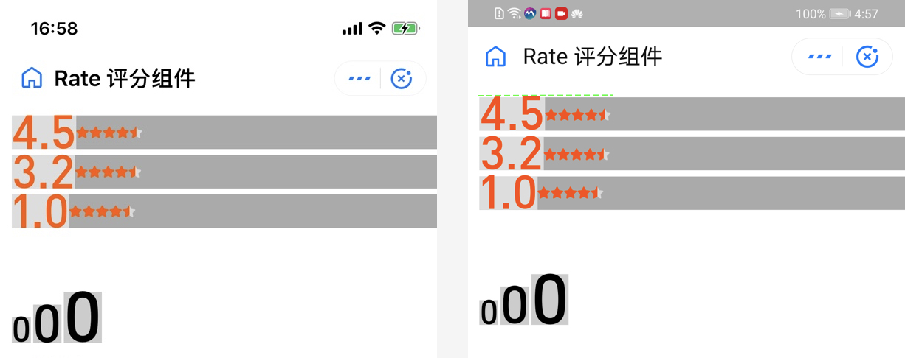
基本上实现了想要的效果，但是仔细看，还是有问题：
安卓字体过大时，字符会溢出字框（右侧绿虚线，图片点开放大看）
字体大小难以统一，正常字体的 30rpx 才相当于无升降部字体的 24 rpx
成本太高，业务中无法重置所有字符的升降部
方案一宣告失败，再看方案二。
方案二需要右侧图片按照 x-height 的高度做上下偏移，以达到在视觉上的垂直居中，要实现这个目的，得先知道 x-height 的具体高度，恰巧，css 中有个极少用的单位可以获取 x-height 的高度， ex 。
1ex 代表当前元素所应用字体的一个 x-height 高度，是一个兼容性极好的单位，利用 ex 可以方便的控制元素高度与字体的关系，所以使当前元素的高度等于 1ex 时，在整个容器中会保持「视觉」上的垂直居中，因为 x-height 的高度在整个文本中处于中间位置，如下图：
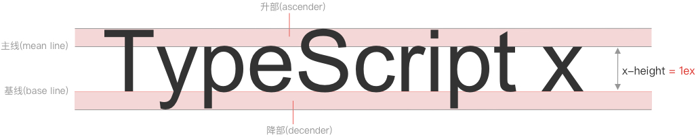
小程序中，图片是以背景方式实现，为了减少高度对背景图的影响（需要根据实际情况调整 mode），这里为 view 标签设置背景图来模拟效果：
/* index.axml */
<view class="rate">
<text class="font-alipay-number">4.5</text>
<!-- <image src="https://gw.alicdn.com/tfs/TB1ZKs4aBFR4u4jSZFPXXanzFXa-177-38.svg" /> -->
<view class="image" />
</view>
/* index.acss */
.rate {
margin-bottom: 10rpx;
}
.rate text {
display: inline-block;
color: #FF5900;
font-size: 38rpx;
}
.rate .image {
height: 1ex; /* 重点，1ex 高度 */
display: inline-block;
background-image: url("https://gw.alicdn.com/tfs/TB1Ujh9LEz1gK0jSZLeXXb9kVXa-226-42.png");
background-size: 113rpx 21rpx;
background-position: left center;
background-repeat: no-repeat;
width: 113rpx;
/* 为了与文本的 1ex 高度保持一致，为图片元素赋值与文本一致的文字属性 */
font-family: "CommonNumber" !important;
font-style: normal;
-webkit-font-smoothing: antialiased;
-moz-osx-font-smoothing: grayscale;
font-size: 58rpx;
}
重点关注 Image 元素的 1ex 高度，并且去掉了父容器的 flex 布局，将子元素改为 line-block 行内元素（原因稍后继续分析），看效果：

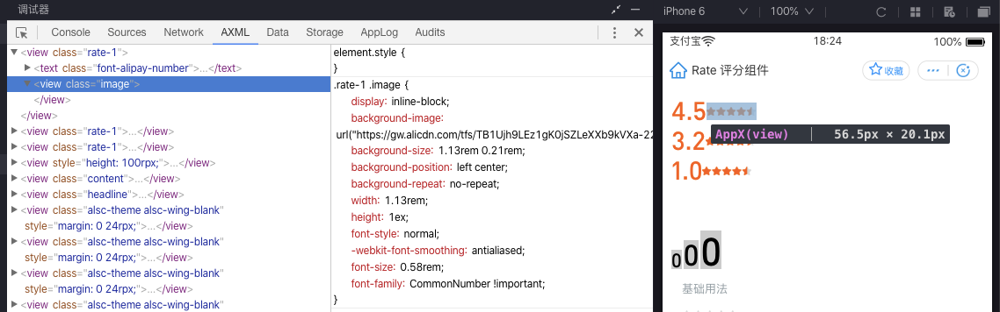
效果完美！今天的工资拿的可以安心一点了，但是，就这样就结束了？
上面的例子只关注了文本比图片大的情况，如果文本小，图片大，这个时候的 1ex 还能用嘛？答案很明显，不可以， 1ex 高度的容器无法容纳整个图片。即使用各种 hack 手段，实现了在一个比图片实际高度小的容器内完整展示图片，并垂直居中，那整个容器的高度也难以计算，而且 hack，我所不欲也，继续！
按照方案二的思路，需要调整图片，让图片按照 x-height 来布局，ex 的路子已验证无法走通，但是和 x-height 相关的属性可不止 ex 一个 —— 有请 vertical-align 上场。
其实在字体中讲解到 BaseLine 时，对 css 熟悉的同学应该就会想到 vertical-align ，因为 vertical-align 的默认值就是 base-line ，「巧合」的是，这里的 base-line 就是指的字体排版中的 BaseLine。
多个行内元素在同一个父元素内参与布局时，默认的排版方式就是以当前元素文本的 BaseLine 对齐，举个例子，如果想要实现不同大小的文本混排，并且文本底端对齐时，只要将子元素设为行内元素即可，如下图
价格中的羊角或小数，通常与主价格大小不一致，经常见到用 flex 布局，然后使用各种 hack 手段，给不同的端、不同的系统添加上下边距，使文本底端「看起来」对齐，其实给各个子元素 display: inline-block; 之后，天然对齐，不用做任何处理。
讲完 vertical-align 中 base-line 的基本应用，再回到我们的话题中，讲一讲 vertical-align 中的其他属性 。
首先看 middle ，与 base-line 同理， middle 也是相对于 BaseLine 的概念，是指 「基线往上的 x-height/2 处」，也就是指将当前元素的垂直中心位置与 x-height 二分之一处重合，也就是与小写字母「x」的交叉点对齐，伪代码如下（减少 rpx 单位换算为 rem 后小数位不精确问题，采用 px 单位）：
/* index.axml */
<view class="rate rate-1">
<text>0.1</text>
<image src="https://gw.alicdn.com/tfs/TB1Ujh9LEz1gK0jSZLeXXb9kVXa-226-42.png" />
</view>
<view class="rate rate-2">
<text>2.3</text>
<image src="https://gw.alicdn.com/tfs/TB1Ujh9LEz1gK0jSZLeXXb9kVXa-226-42.png" />
</view>
<view class="rate rate-3">
<text>4.5</text>
<image src="https://gw.alicdn.com/tfs/TB1Ujh9LEz1gK0jSZLeXXb9kVXa-226-42.png" />
</view>
/* index.acss */
.rate {
margin-bottom: 10px;
}
.rate text {
font-family: "CommonNumber" !important;
font-style: normal;
-webkit-font-smoothing: antialiased;
-moz-osx-font-smoothing: grayscale;
line-height: 1;
}
.rate text {
display: inline-block;
color: #FF5900;
vertical-align: middle; /* 重点 */
}
.rate-1 text {
font-size: 24px;
}
.rate-2 text {
font-size: 13px;
}
.rate-3 text {
font-size: 44px;
}
.rate image {
display: inline-block;
vertical-align: middle; /* 重点 */
margin-left: 4px;
}
.rate-1 image {
width: 113px;
height: 21px;
}
.rate-2 image {
width: 113px;
height: 21px;
}
.rate-3 image {
width: 113px;
height: 21px;
}
看下实际效果：

视觉上看着是「居中」了，为了更精确，放大再看下：
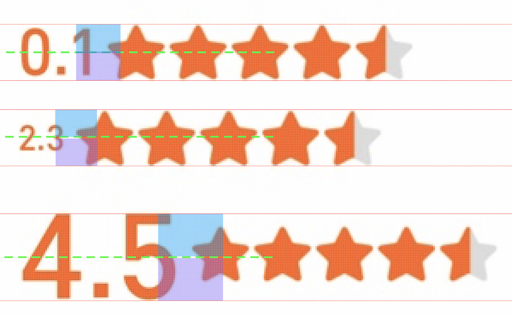
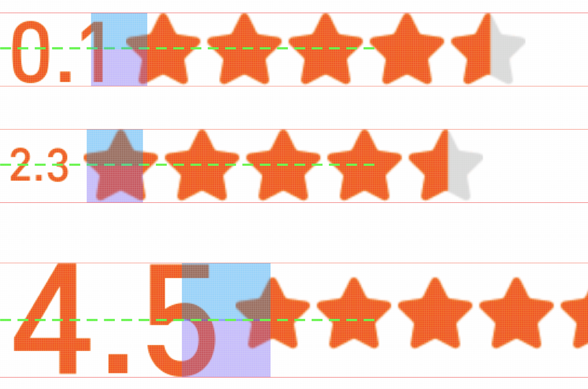
（有几个像素的偏差，深究之后发现是字体原因，数字升部有一些偏差，不改字体此处无解）
蓝色和紫色色块的高度一致，绿线为整个容器的垂直居中线，可以看到，不管在 iOS 还是安卓，效果都「近乎」完美（点开图片放大，可以数像素格），至此，终于可以长出一口气了。
不过都走到这了，让我们更进一步，上面讲到 middle 是将当前元素的垂直中心位置与 x-height 二分之一处重合，可是这句话忽略了一个问题，到底是跟哪个文本的 x-height 二分之一处重合呢？
首先肯定不是当前元素，因为文本和图片元素的 x-height 肯定不一致，设置 vertical-align: middle; 时无法保证在同一条平分线上，所以只能是父容器，但是问题来了，父容器并没有设置字体、字号，那 x-height 哪里来的呢？
为了验证这个问题，清空所有子元素，只保留一个设置了 inline-block 的文本元素，父容器也无任何属性，伪代码如下：
<view class="rate">
<text></text>
</view>
.rate text {
display: inline-block;
}
看下实际渲染结果：
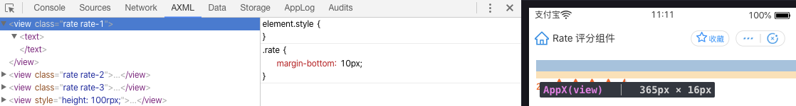
很神奇，子元素无任何内容，整个父容器居然也有高度，是什么因素影响了呢，答案是「幽灵空白节点」（来源于张鑫旭老师命名），在内联元素之前，永远存在着一个「空白节点」，不占据宽度，无法获取，但是真实存在，并且表现和文本节点一样，这就是内联元素设置 vertical-align 时 x-height 对齐的对象。
这样，就很好理解当为两个内联子元素设置 vertical-align 时，它们能够严格对齐，就是因为它们所对齐的「基准」是同一个「节点」。
插句题外话，使用内联元素时，元素与元素之间，会有缝隙出现，也是这个「幽灵空白节点」在作祟，一般处理就是让这个「节点」「消失」，比如将父容器的字号设为0、行高设为0等等。
所以，很多 CSS 问题在各个场景都需要具体分析，上面的例子主要用来讲解 CSS 字体排版的一些问题，除了用 vertical-align 实现基线对齐，其实也有其他办法实现。比如星星用 icon font 实现，然后改造 icon font 的升降部与文本完全一致，这样不管如何排版，基线永远一样，可以省去很多事情，有兴趣可以试下。
好了，垂直居中的问题终于可以完美解决了，再看下最终结果，美滋滋拿今天的工资：
讲了这么多，其实最终的知识点都还是在 css 的盒模型范围内。
关于盒模型，前端经常提到 BFC（Block Formatting Context），但是在块级盒模型之外，还有 IFC（Inline Formatting Context）行内盒模型。
IFC 的使用场景大部分聚焦在字体排版上，而且使用起来极其复杂，原理性内容也更多，所以 BFC 的使用场景更广，小程序内甚至默认 Flex 布局，但是实际应用中，Flex 会带来不少问题，开发中还是需要具体问题具体分析。
如果想要了解更多关于 IFC 的知识，推荐张鑫旭老师的「CSS世界」。